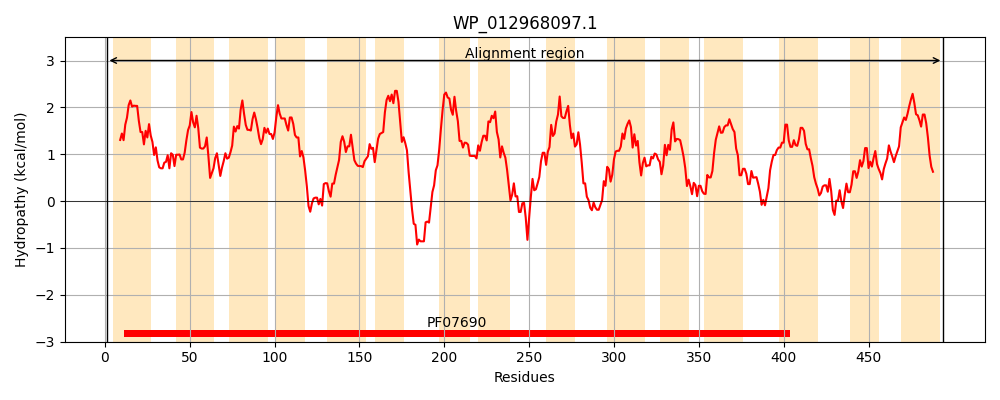
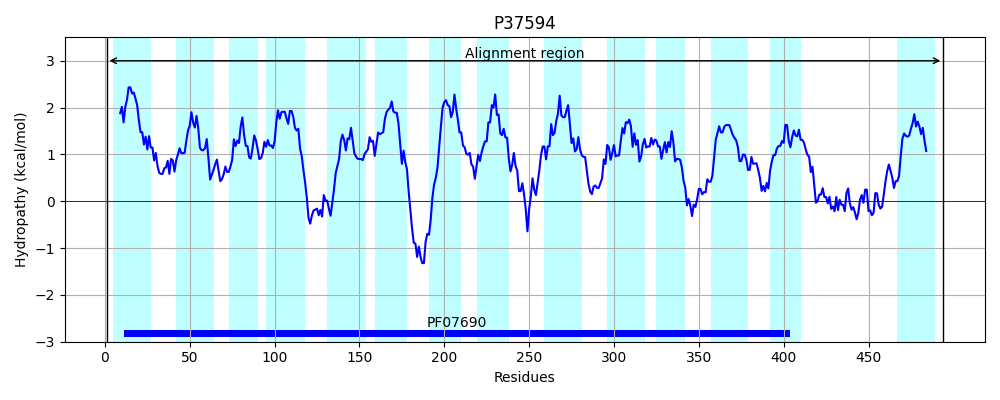
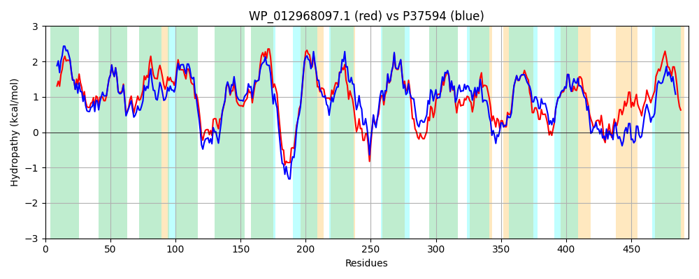

Hit Accession: P37594
Hit TCID: 2.A.1.3.14
Hit Description: gnl|BL_ORD_ID|10106 gnl|TC-DB|P37594|2.A.1.3.14 Methyl viologen resistance protein smvA - Salmonella typhimurium.
Mach Len: 494
e:0.000000
Query TMS Count : 15
Hit TMS Count: 14
TMS-Overlap Score: 13.550000
Predicted Substrates:CHEBI:383703;3,6-diamino-10-methylacridinium chloride, CHEBI:90405;pyronin B, CHEBI:4883;ethidium bromide, CHEBI:5584;hydron, CHEBI:44107;malachite green cation, CHEBI:3056;Benzyl viologen
BLAST Alignment:
Score: 1817 , Bit scores: 704 bits, E-value: 0.0e+00, Alignment length: 494, Percentage identity: 73
Query: 1 MSRQWMTLMAILLVYIPVAIDATVLHVAAPTLSVALGSSGNELLWIIDIYSLVMAGMVLPMGALGDKIGFKRLLLLGSAIFGVASLCAALSPTALTLIASRALLAVGAAMIVPATLAGIRSTFAEASQRNMALGLWAAVGSGGAAFGPLVGGMLLEHFYWGSVFLINVPIVLVVIAINAKVVPRQPARREQPLNLLQALILIASILMLVFSAKSALKGQLALWLTALVAIGGAAMLTWFIRKQLSATRPMVDMRLFTHRIILSGVMMAMTALITLVGFELLMAQELQFVHQKTPFEAGMFMLPVMVASGFSGPIAGLLVSRLGLREVATGGMLLSAFSFLGLALTDFSSQPWQAWGLMTLLGFSVASALLASSSAIMAAAPKEKAAAAGAIETMAYELGAGLGIALFGLILTRSYSATIVLPSGLSESMAQQASSSIGEAVSLTEALPAGMAEALMAAAKAAFTQAHSLVLATAGVLLLLLAAGIWRSLASVAK 494
M RQW+TL+ I+LVYIPVAIDATVLHVAAPTLS+ LG+SGNELLWIIDIYSLVMAGMVLPMGALGD+IGFKRLL+LG +FG+ASL AA S TA LIA+R LLA+GAAMIVPATLAGIR+TF E RNMALG+WAAVGSGGAAFGPL+GG+LLEHFYWGSVFLINVPIVLVV+ + A+ VPRQ RR+QPLNL A++LI +IL+LV+SAK+ALKG L+LW+ + + GA +L FIR QL+ +RPM+DMRLFTHRIILSGV+MAMTA+ITLVGFELLMAQELQFVH +P+EAG+FMLPVMVASGFSGPIAG+LVSRLGLR VATGGM LSA SF GLA+TDFS+Q WQAWGLM LLGFS ASALLAS+SAIMAAAP EKAAAAGAIETMAYELGAGLGIA+FGL+L+RS+SA+I LP+GL +ASSS+GEAV L +LP +A++ AA+ AF +HS+ L++AG +LLLLA G+W SLA +
Sbjct: 1 MFRQWLTLVIIVLVYIPVAIDATVLHVAAPTLSMTLGASGNELLWIIDIYSLVMAGMVLPMGALGDRIGFKRLLMLGGTLFGLASLAAAFSHTASWLIATRVLLAIGAAMIVPATLAGIRATFCEEKHRNMALGVWAAVGSGGAAFGPLIGGILLEHFYWGSVFLINVPIVLVVMGLTARYVPRQAGRRDQPLNLGHAVMLIIAILLLVYSAKTALKGHLSLWVISFTLLTGALLLGLFIRTQLATSRPMIDMRLFTHRIILSGVVMAMTAMITLVGFELLMAQELQFVHGLSPYEAGVFMLPVMVASGFSGPIAGVLVSRLGLRLVATGGMALSALSFYGLAMTDFSTQQWQAWGLMALLGFSAASALLASTSAIMAAAPAEKAAAAGAIETMAYELGAGLGIAIFGLLLSRSFSASIRLPAGLEAQEIARASSSMGEAVQLANSLPPTQGQAILDAARHAFIWSHSVALSSAGSMLLLLAVGMWFSLAKAQR 494 | Protein Hydropathy Plots: |
|---|
|  |  |
Pairwise Alignment-Hydropathy Plot:
|
|---|
|  |